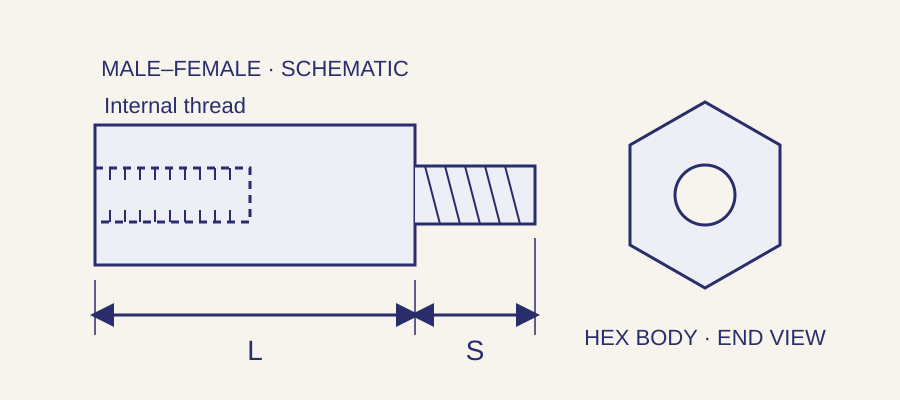

// ELECTRONIC HARDWARE
Threaded standoffs for electronic assemblies.
Support and separate boards, panels and chassis with the specified threaded mounting configuration. Webson supplies and sources standoffs by manufacturer part number or drawing, including requirements for inch or metric threads and custom geometry.
Request a standoff quote →Part number, drawing or bill of material welcome.
Availability and lead time confirmed with quotation.
Standoffs and configurations
Scroll sideways on smaller screens to view every column.
| Configuration | Attachment ends | Details to check |
|---|---|---|
| Female-female | Internally threaded attachment at both ends. | Thread callout at each end, usable thread depth and whether the hole is through or blind. |
| Male-female | An external threaded stud at one end and an internal thread at the other. | Body length, projecting stud length, internal thread depth and each thread callout. |
| Male-male | An external threaded stud at both ends. | Body length, each stud length and the thread callout at each end. |
| Special installation styles | Other mounting methods may include press-in or self-clinching attachment. | Specify the exact product and installation drawing; panel material, hardness, thickness and hole preparation can control suitability. |
How to specify standoffs

Keep body length separate from overall length and stud projection. For female threads, distinguish the required usable thread depth from a drilled-hole depth. Check the manufacturer drawing before selecting screw length or planning a threaded stack.
Scroll sideways on smaller screens to view every column.
| Feature | How to describe it | Why it matters |
|---|---|---|
| Body length L | Distance between body seating faces, using the drawing’s convention. | Usually establishes separation; overall length can also include one or more projecting studs. |
| External stud length S | Projection from the body seating face to the stud end. | Controls engagement in the mating threaded part and clearance beyond it. |
| Internal threads | Nominal size, pitch or threads per inch, class where required, and usable thread depth. | A mating screw must engage sufficiently without bottoming out in a blind hole. |
| Body profile | Round outside diameter or hex width across flats. | Controls adjacent-component clearance and access for installation tools. |
| End-specific details | Different threads at opposite ends, shoulders, reliefs or other features. | A short description such as “M3 standoff” may not identify the complete part. |
Material and finish options
Specify the actual material grade and finish required by the part or assembly. The following are selection considerations, not performance ratings or a list of stocked sizes.
Scroll sideways on smaller screens to view every column.
| Material family | Selection considerations | Details to specify |
|---|---|---|
| Aluminum | A metal option where component weight matters. | Alloy, finish and any electrical contact requirements. |
| Brass | Used in machined hardware; may be specified with a plated finish. | Grade, finish and coating requirements. |
| Stainless steel | A metal option for assemblies with specified corrosion or environmental requirements. | Grade, passivation or other finish, and mating materials. |
| Nylon and other plastics | Options for assemblies requiring nonmetallic components. | Exact resin, temperature range, mechanical loads and any required flammability or electrical ratings. |
For insulating applications, review the complete electrical and environmental requirements. For conductive connections, identify the required contact surfaces and coating. Sourcing options depend on the individual part.
PCB, panel and chassis applications
Threaded standoffs are used to mount circuit boards, establish panel offsets and support components in instrumentation and enclosures. Compare installed height, board-hole clearance, tool access and mating thread engagement. Material and finish alone do not establish an approved grounding path or electrical isolation for the finished assembly.
For repeat production requirements, vendor-managed inventory and custom kitting can be reviewed against your bill of material and release schedule.
Questions before ordering
Does standoff length include the male thread?
The listed length convention depends on the manufacturer and product. Body length commonly excludes a projecting stud, while overall length includes it. Use the product drawing and specify body length and stud projection separately.
Are female-female standoffs threaded all the way through?
Not necessarily. Some parts have a through-threaded hole; others are tapped from each end or have a blind hole. Check the drawing for usable thread depth and internal geometry.
Can the threads differ at the two ends?
Some configurations use different thread requirements at opposite ends. Identify each end explicitly by part number or drawing, including size, pitch and required depth or stud length.
Can Webson source custom standoffs?
Yes. Webson can review drawing-specific body lengths, end configurations, threads, materials and finishes through manufacturing partners. Include quantity, requested delivery date and any documentation requirements.
Send a complete standoff requirement
Manufacturer part number or drawing revision; quantity; end configuration; body length; stud projection and usable internal thread depth; thread callouts for both ends; body profile; material; finish; requested delivery date; required documentation.
Request a standoff quote →Quality and documentation
Webson is an AS9120B and ISO 9001:2015 certified distributor. Identify required certificates, lot traceability and source restrictions with the inquiry so the order requirements can be reviewed. View certification and quality scope or documentation and traceability support.
Serving customers since 1986 · Deer Park, New York · Standard and drawing-specific sourcing